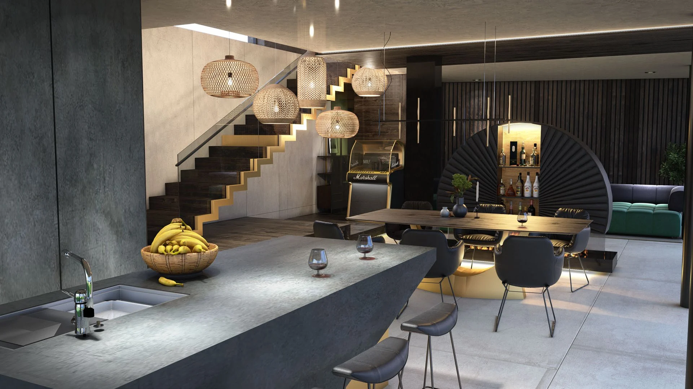

Zeitgenössische private Residenz
Ein zeitgenössisches Wohninterieur, aufgebaut auf Offenheit, visueller Kontinuität und präzise integrierter Möblierung. Architektonische Elemente, Licht und Einbauten definieren einzelne Zonen, ohne den Gesamtraum zu fragmentieren.

Plan / Zeichnung
Räumliche Organisation



Nächstes Projekt
Ansehen